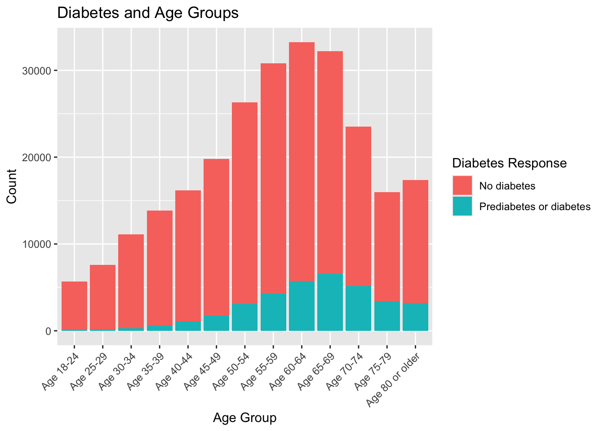

library("tidyverse")EDA
Introduction
In this project, I analyze data on diabetes. These data are a subset of the Behavioral Risk Factor Surveillance System (BRFSS) which is an annual telephone survey conducted by the Centers for Disease Control (CDC). This subset includes responses from 253,680 people and was collected in 2015. This dataset contains information on whether the person does not have diabetes or if they have either pre-diabetes or diabetes, in addition to other numeric and categorical health indicators. There are binary, indicator variables describing whether or not the person has a history of high blood pressure, high cholesterol, smoking, stroke, coronary heart disease (CHD) or myocardial infarction (MI), physical activity in the past 30 days, daily fruit consumption, daily veggie consumption, alcohol consumption, healthcare coverage, missing medical care due to cost, and difficulty walking. There are also categorical variables with multiple levels describing the person’s general health, mental health, and physical health as well as demographic characteristics like sex, age, education, and income. There is also a numeric variable, BMI or body mass index, calculated by (weight in kg)/(height in meters)^2.
The goal of this project is to develop a good model to model and make predictions about whether or not a person has diabetes. According to a CDC article published in 2024 (https://www.cdc.gov/diabetes/risk-factors/index.html), being overweight or obese, being 45 or older, having a close relative with Type 2 diabetes, being physically active 3 or fewer times in a week, having non-alcoholic fatty liver disease (NAFLD), having gestational diabetes, or being an African American, Hispanic or Latino, American Indian, or Alaska Native person are main factors associated with prediabetes and Type 2 diabetes. In our dataset, we have access to BMI (overweight or obesity), physical activity, and age. I will explore the summary and distribution of those three variables (BMI, physical activity, and age).
Data
Reading in the data
First, we read in the data. The data has been downloaded and stored in my GitHub repository, but was originally sourced from Kaggle (https://www.kaggle.com/datasets/alexteboul/diabetes-health-indicators-dataset/data).
#Reading in the data
diabetes_data <- read.csv("diabetes_binary_health_indicators_BRFSS2015.csv")Cleaning the data
Next, we clean and manipulate the data. We select the four variables we are most interested in which are the response variable (whether or not the person has been diagnosed with pre-diabetes or diabetes) and three explanatory variables. The explanatory variables are whether the person is physically active (a binary variable), the person’s BMI (a numeric variable), and the person’s age (a categorical variable with 13 levels corresponding to different age groups).
#Selecting response and 3 chosen explanatory variables
#Converting categorical variables from numeric variables to factor variables
diabetes_select <- diabetes_data |>
select(Diabetes_binary, BMI, PhysActivity, Age) |>
rename("diabetes_resp" = Diabetes_binary) |>
rename("bmi" = BMI) |>
rename("phys_activity" = PhysActivity) |>
rename("age" = Age) |>
mutate(diabetes_resp = factor(diabetes_resp, levels = c(0, 1),
labels = c("No diabetes", "Prediabetes or diabetes"))) |>
mutate(phys_activity = factor(phys_activity, levels = c(0, 1),
labels = c("No physical activity", "Physical activity"))) |>
mutate(age = factor(age, levels = c(1, 2, 3, 4, 5, 6, 7, 8, 9, 10, 11, 12, 13),
labels = c("Age 18-24", "Age 25-29", "Age 30-34", "Age 35-39",
"Age 40-44", "Age 45-49", "Age 50-54", "Age 55-59",
"Age 60-64", "Age 65-69", "Age 70-74", "Age 75-79",
"Age 80 or older")))Checking for Missingness
colSums(is.na(diabetes_select))diabetes_resp bmi phys_activity age
0 0 0 0 After selecting our four variables, we check for missingness. None of our 4 variables have any missing values (hooray!) so we can proceed to further data visualizations and summaries.
Summarizations
Univariate Explorations
Before looking at the bivariate relationship between the 3 explanatory variables and the response variable, whether or not the person has diabetes, we will look at each of the variables individually.
First, we will look at BMI. BMI is a numeric variable that ranges from 12 to 98 and is calculated by (weight in kg)/(height in meters)^2.A summary of important statistics for BMI is below.
diabetes_select |>
summarize(across(bmi, .fns = list("mean" = mean,
"median" = median,
"var" = var,
"sd" = sd,
"IQR" = IQR), .names = "{.col} {.fn}")) bmi mean bmi median bmi var bmi sd bmi IQR
1 28.38236 27 43.67484 6.608694 7Second, we will look at the variable for physical activity. This is a binary variable where the value of 1 indicates that the person had done some physical activity outside of their job in the last 30 days while a value of 0 indicates that they had not.
Third, we will look at the last explanatory variable–age groups. This is a categorical variable with 13 levels each reflecting an age group. The 13 groups are: Age 18-24, Age 25-29, Age 30-34, Age 35-39, Age 40-44, Age 45-49, Age 50-54, Age 55-59, Age 60-64, Age 65-69, Age 70-74, Age 75-79, and Age 80 or older.
Finally, we will look at the response variable. This variable describes whether or not the person has diabetes or prediabetes. A value of 1 means yes and a value of 0 means no.
Contingency Tables and Bar Charts
We will use contingency tables and bar charts to assess if there is a difference in diabetes rates at different levels of categorical variables.
First, we will look at diabetes rates among people who do physical activity vs those who do not.
diabetes_select |>
group_by(diabetes_resp, phys_activity) |>
summarize(count = n()) |>
mutate(percentage = count / sum(count) * 100) |>
pivot_wider(names_from = phys_activity,
values_from = c(count, percentage),
names_glue = "{phys_activity} {.value}")# A tibble: 2 × 5
# Groups: diabetes_resp [2]
diabetes_resp `No physical activity count` `Physical activity count`
<fct> <int> <int>
1 No diabetes 48701 169633
2 Prediabetes or diabetes 13059 22287
# ℹ 2 more variables: `No physical activity percentage` <dbl>,
# `Physical activity percentage` <dbl># Stacked barplot with multiple groups
phys_act_groups <- diabetes_select %>%
group_by(phys_activity,
diabetes = factor(diabetes_resp,
levels = c("No diabetes", "Prediabetes or diabetes"))) %>%
summarize(count = n(), .groups = "drop")
ggplot(data = phys_act_groups,
aes(x = phys_activity, y = count, fill = diabetes)) +
geom_bar(stat="identity") +
labs(title = "Diabetes and Physical Activity", x = "Physical Activity",
y = "Count", fill = "Diabetes Response")
Next, we will look at diabetes rates across the 13 different age groups.
diabetes_select |>
group_by(diabetes_resp, age) |>
summarize(count = n()) |>
mutate(percentage = count / sum(count) * 100) |>
pivot_wider(names_from = age,
values_from = c(count, percentage),
names_glue = "{age} {.value}")# A tibble: 2 × 27
# Groups: diabetes_resp [2]
diabetes_resp `Age 18-24 count` `Age 25-29 count` `Age 30-34 count`
<fct> <int> <int> <int>
1 No diabetes 5622 7458 10809
2 Prediabetes or diabetes 78 140 314
# ℹ 23 more variables: `Age 35-39 count` <int>, `Age 40-44 count` <int>,
# `Age 45-49 count` <int>, `Age 50-54 count` <int>, `Age 55-59 count` <int>,
# `Age 60-64 count` <int>, `Age 65-69 count` <int>, `Age 70-74 count` <int>,
# `Age 75-79 count` <int>, `Age 80 or older count` <int>,
# `Age 18-24 percentage` <dbl>, `Age 25-29 percentage` <dbl>,
# `Age 30-34 percentage` <dbl>, `Age 35-39 percentage` <dbl>,
# `Age 40-44 percentage` <dbl>, `Age 45-49 percentage` <dbl>, …# Stacked barplot with multiple groups
age_groups <- diabetes_select %>%
group_by(age,
diabetes = factor(diabetes_resp, levels = c("No diabetes", "Prediabetes or diabetes"))) %>%
summarize(count = n(), .groups = "drop")
ggplot(data = age_groups, aes(x = age, y = count, fill = diabetes)) +
geom_bar(stat="identity") +
labs(title = "Diabetes and Age Groups", x = "Age Group",
y = "Count", fill = "Diabetes Response") +
theme(axis.text.x = element_text(angle = 45, hjust = 1))Summarizing Center and Spread
diabetes_select |>
group_by(diabetes_resp) |>
summarize(across(bmi, .fns = list("mean" = mean,
"median" = median,
"var" = var,
"sd" = sd,
"IQR" = IQR), .names = "{.col} {.fn}"))# A tibble: 2 × 6
diabetes_resp `bmi mean` `bmi median` `bmi var` `bmi sd` `bmi IQR`
<fct> <dbl> <dbl> <dbl> <dbl> <dbl>
1 No diabetes 27.8 27 39.6 6.29 7
2 Prediabetes or diabetes 31.9 31 54.2 7.36 8# Use semi-transparent fill
p <- ggplot(diabetes_select, aes(x = bmi, fill = diabetes_resp)) +
geom_density(alpha=0.3) +
labs(title = "BMI Distribution by Diabetes Diagnosis",
x = "BMI", y = "Density", fill = "Diabetes Diagnosis")
p